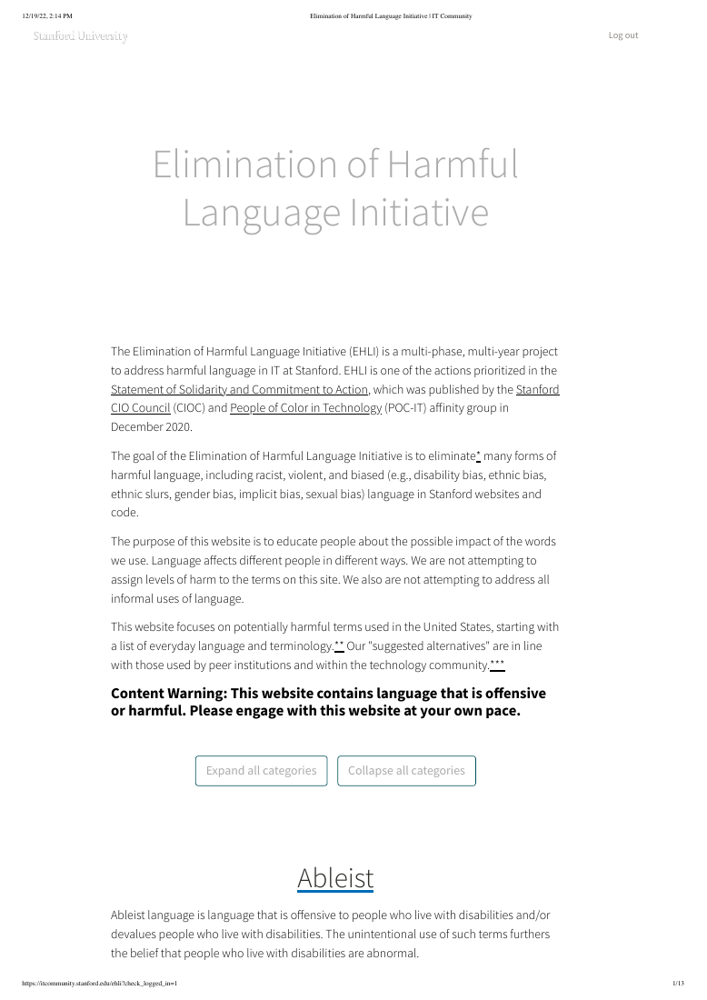
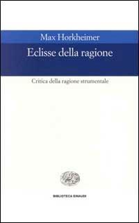
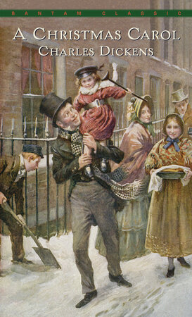
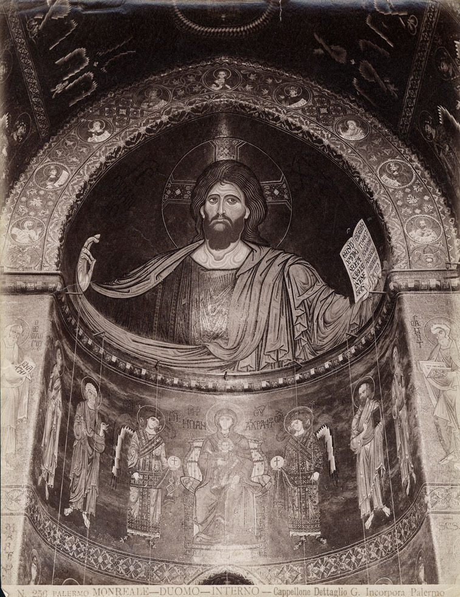

30:18 · 9 OPERE
Una modesta prospettiva sul Natale.
Il filo del discorso
In un contributo per la vigilia di Natale, Dr Divago propone una lettura personale della festa come celebrazione della vita e della fragilità. Il percorso attraversa prima una lunga critica dell’istruzione e della comunicazione: da Kant riprende il rapporto fra ragione e autonomia, mentre il richiamo a Horkheimer distingue il giudizio sui fini dalla sola efficienza dei mezzi.
Leggi la sintesi completaRiduci la sintesi
Le guide linguistiche di Stanford, le presentazioni standardizzate e i metodi per prendere appunti diventano esempi di un apprendimento che, secondo il relatore, rischia di sostituire l’attività individuale con procedure già pronte. Il ritorno al Natale avviene attraverso la luce che cresce dopo il solstizio e il neonato nella mangiatoia: un’immagine in cui meraviglia e vulnerabilità sono inseparabili. La reverenza per la vita di Schweitzer e il cambiamento di Scrooge nel Canto di Natale sostengono il passaggio dal consumo al dono. Dr Divago contrappone poi la piccolezza del bambino alla maestà del Pantocratore di Monreale, interpretando la ricerca di potenza come possibile rimozione della mortalità. La domanda biblica su dove ci si trovi diventa infine un invito a interrogare le proprie scelte dopo la lunga notte. La scheda distingue questa proposta filosofica e spirituale dalle generalizzazioni sulle istituzioni, dalle ricostruzioni storiche delle feste e dalla portata effettiva dei documenti citati.
I libri nel discorso
Risposta alla domanda: che cos’è l’Illuminismo?
Note sul riferimento
Copertina della raccolta che comprende il saggio sull’Illuminismo: Firenze University Press · Sette scritti politici liberi · 2011 · a cura di Maria Chiara Pievatolo
Copertina del volume cartaceo FUP che comprende il saggio, riscontrato dal catalogo universitario. L’ISBN appartiene alla raccolta; il filmato non annuncia un’edizione e il titolo del saggio è un’identificazione probabile della citazione.
Kant, Che cos’è l’Illuminismo, coraggio di servirsi della propria ragione.

Elimination of Harmful Language Initiative (EHLI)
Identificazione probabile
Note sul riferimento
Prima pagina del documento digitale: PRIMA PAGINA del documento digitale: stampa della pagina web Stanford del 19 dicembre 2022, 13 pagine, copia conservata dallo Stanford Daily. Non è una copertina editoriale. Le voci grandfather e grandfathered compaiono a pagina 9.
Prima pagina intera resa dal PDF originale, con intestazione, data e testo introduttivo. L’immagine riproduce la pagina del documento indicato.
Lista Stanford con grandfather e alternativa legacy; identificazione documentaria EHLI dal contenuto e dal contesto del dicembre 2022.

La Repubblica
Identificazione probabile
Note sul riferimento
Copertina: Laterza · La Repubblica · edizione con testo a fronte di riferimento
Immagine associata all’ISBN di riferimento e controllata visivamente; edizione e traduzione non identificate come quelle citate o lette nel video.
Piccola caverna platonica, allusione usata per la ricerca di informazioni; titolo non pronunciato.

1984
Identificazione probabile
Note sul riferimento
Copertina: Newton Compton · edizione illustrativa
Orwell e la cancellazione delle parole per ostacolare il pensiero, allusione alla neolingua senza titolo espresso.

Eclisse della ragione. Critica della ragione strumentale
Identificazione probabile
Note sul riferimento
Copertina: Einaudi, Biblioteca Einaudi, 2000, traduzione di Elena Vaccari Spagnol, ISBN 9788806154370. Il titolo è anche catalogato con la variante Eclissi; la copertina acquisita reca Eclisse. Originale inglese Eclipse of Reason, 1947.
Copertina autentica Einaudi bianca con fascia blu, autore, titolo e sottotitolo leggibili. Non è la copertina del diverso Crepuscolo. Il collegamento all’editore Bloomsbury verifica l’opera originale, mentre la copertina italiana proviene da IBS.
Horkheimer e ragione strumentale; il volume è un’identificazione probabile del tema, non un titolo pronunciato.

Civilization and Ethics (Kultur und Ethik)
Identificazione probabile
Note sul riferimento
Copertina della raccolta: Prometheus · The Philosophy of Civilization · 1987 · raccolta in inglese
Copertina della raccolta Prometheus del 1987 che contiene The Decay and Restoration of Civilization e Civilization and Ethics. I due saggi, originariamente distinti, restano voci separate. L’edizione in inglese dell’immagine non è attribuita al video.
Schweitzer, Ehrfurcht vor dem Leben, reverenza per la vita; rinvio probabile a Kultur und Ethik, non citazione del titolo.

Bibbia
Note sul riferimento
Copertina: San Paolo, 2014 · Nuova Versione dai Testi Antichi · edizione di riferimento
Il Verbo si fece carne, Giovanni 1,14; mangiatoia in Luca 2; operai della vigna, Matteo 20; domanda dove sei riconducibile a Genesi 3,9.

Canto di Natale (A Christmas Carol)
Note sul riferimento
Copertina: Bantam Classics, 1 novembre 1986, 112 pagine, testo inglese, ISBN 9780553212440. Copertina ufficiale intera con scena illustrata dei Cratchit, non un adattamento cinematografico.
Copertina autentica prelevata dal collegamento cover dell’editore, preferito alla composizione promozionale smedia. Nessuna edizione particolare è riconosciuta nell’audio.
Christmas Carol, Scrooge, cambiamento del protagonista e dono del tacchino alla famiglia del suo impiegato.

Cristo Pantocratore, mosaico dell’abside di Monreale
Note sul riferimento
Fotografia storica del mosaico: FOTOGRAFIA STORICA dell’abside centrale della cattedrale di Santa Maria Nuova a Monreale, opera musiva del XII secolo. Giuseppe Incorpora, circa 1890, albumina su carta, circa 25 × 20 cm; riproduzione digitale del CRICD, documentazione 00006720. Non è una copertina libraria.
Riproduzione autentica della fotografia storica catalogata: Pantocratore con libro aperto, Vergine e angeli sottostanti, iscrizione fotografica Incorpora sul margine. La data circa 1890 riguarda lo scatto, non la realizzazione del mosaico. Sono visibili le condizioni e le lacune documentate dalla fotografia. Nessuna licenza libera viene dedotta dalla sola proprietà pubblica della stampa.
Cristo Pantocratore nel Duomo di Monreale, esplicitamente nominato nel confronto con il bambino nella mangiatoia.